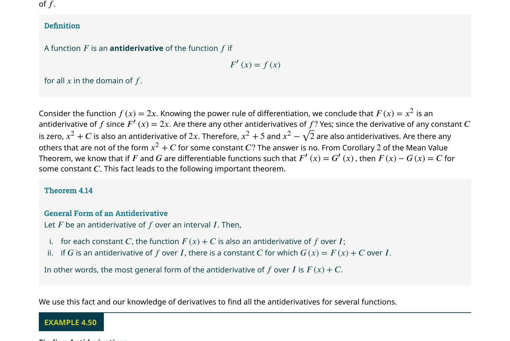
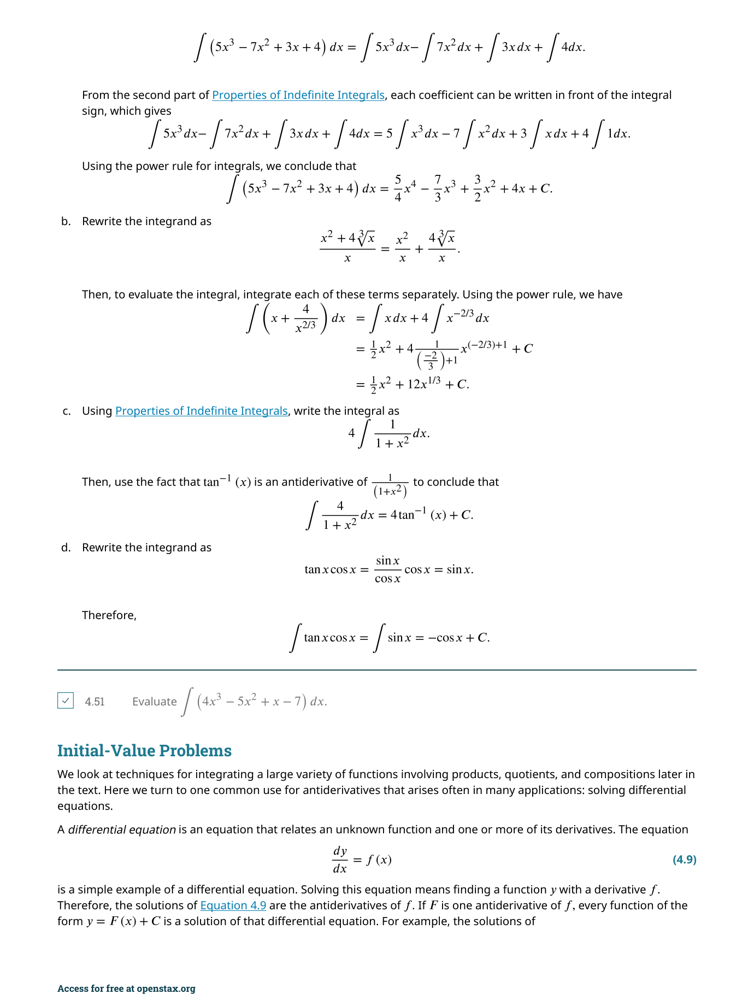
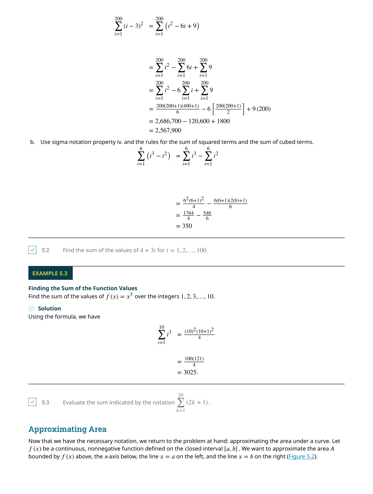
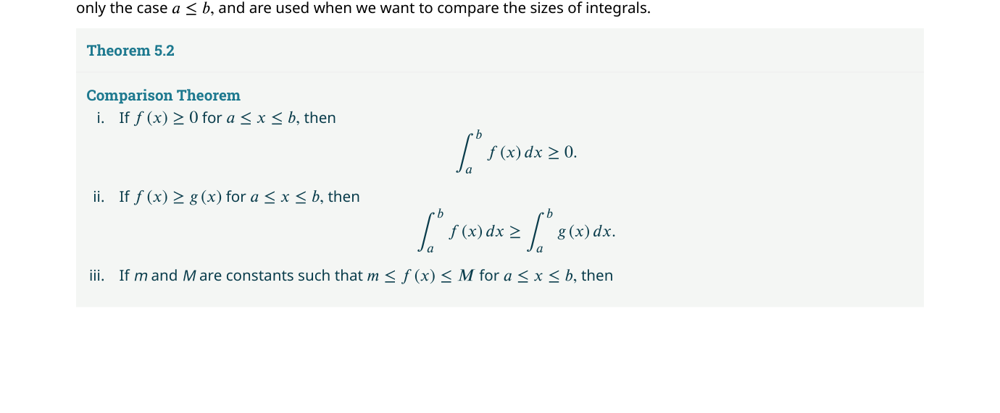
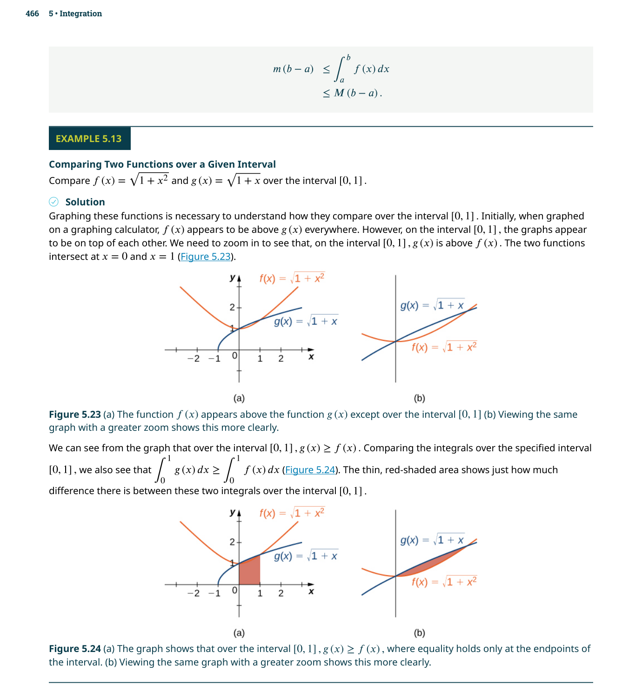
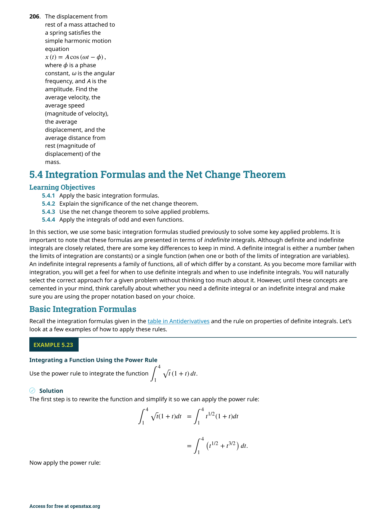
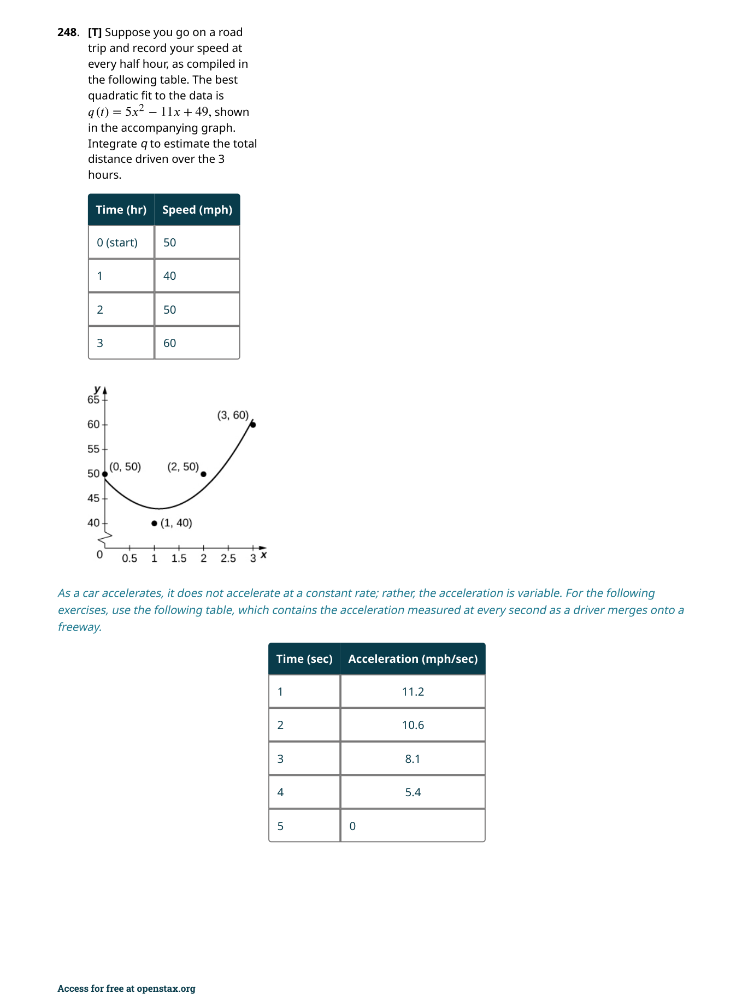
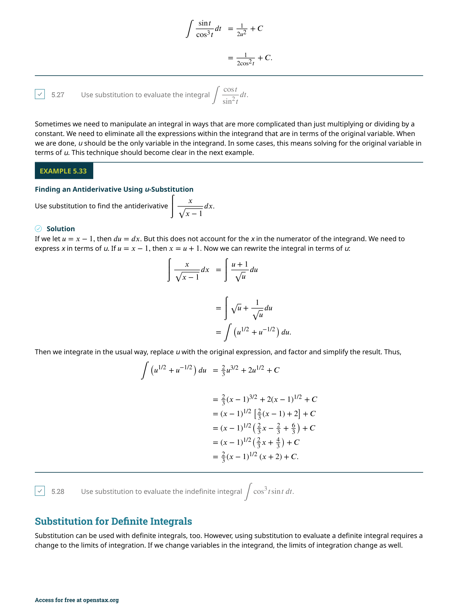
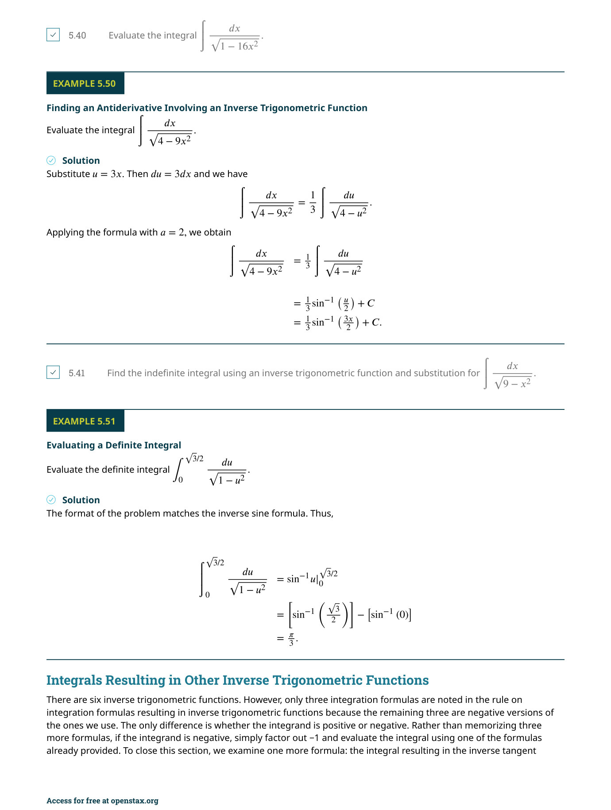

多重積分
📌 本章要解決的核心問題
單變數的定積分讓我們能計算曲線下的面積。但當我們面對三維空間中的體積、質量、質心等問題時，需要將積分推廣到多個變數。本章將定積分從一維拓展到二維（二重積分）和三維（三重積分），涵蓋直角座標、極座標、柱座標與球座標四種座標系，並以 Fubini 定理為核心工具，把多重積分化為逐次積分來計算。
🔑 關鍵概念（10 條）
- 二重積分定義：$\iint_R f(x,y)\,dA = \lim_{m,n\to\infty}\sum_{i=1}^m\sum_{j=1}^n f(x_{ij}^*,y_{ij}^*)\Delta A$——雙 Riemann 和的極限
- Fubini 定理：將二重積分化為逐次積分（iterated integral）——先積 $y$ 再積 $x$，或反過來
- Type I 與 Type II 區域：一般區域的兩種描述方式，決定積分上下限的寫法
- 極座標二重積分：$dA = r\,dr\,d\theta$——面積元素多了一個 $r$ 因子
- 三重積分：$\iiint_E f(x,y,z)\,dV$——六種可能的積分順序
- 柱座標：$(r,\theta,z)$，$dV = r\,dr\,d\theta\,dz$——適合軸對稱問題
- 球座標：$(\rho,\theta,\phi)$，$dV = \rho^2\sin\phi\,d\rho\,d\theta\,d\phi$——適合球對稱問題
- 質心與轉動慣量：用二重/三重積分計算質量的分佈中心與旋轉阻力
- Jacobian 行列式：$\frac{\partial(x,y)}{\partial(u,v)}$——變數變換時的「面積放大因子」
- 座標系的選擇策略：對稱性決定最優座標系——這是多重積分計算的核心技巧
🧭 本章推理地圖
單變數積分求面積，多變數積分求體積與質量 → 二重積分（§5.1–§5.2）將區域切成小矩形，Fubini 定理允許逐次積分 → 極座標二重積分（§5.3）處理圓形區域：dA = r dr dθ → 三重積分（§5.4）擴展到立體區域，六種積分順序可選 → 柱座標與球座標（§5.5）處理圓柱／球對稱：dV = r dz dr dθ 或 ρ²sinφ dρ dφ dθ → 應用（§5.6）：質心、轉動慣量、電荷分佈 → 一般變數變換（§5.7）用 Jacobian 行列式調整面積／體積元素
5.1 矩形區域上的二重積分（Double Integrals over Rectangular Regions）
我們從最簡單的情形開始：給定一個定義在矩形區域 $R = [a,b] \times [c,d]$ 上的連續函數 $f(x,y)$，求曲面 $z = f(x,y)$ 下方、$xy$ 平面上方、以 $R$ 為底的立體的體積。這是單變數積分「曲線下面積」的自然推廣——只是現在「底」是二維的矩形，而「頂」是三維的曲面。

仿照單變數的做法，我們將矩形 $R$ 分割成 $m \times n$ 個小矩形 $R_{ij}$，每個面積為 $\Delta A = \Delta x \cdot \Delta y$。在每個小矩形中選取樣本點 $(x_{ij}^*, y_{ij}^*)$，則該點的函數值 $f(x_{ij}^*, y_{ij}^*)$ 近似為小柱體的高度。所有小柱體的體積和就是雙 Riemann 和（double Riemann sum）：

當 $m, n \to \infty$ 時，如果這個極限存在，我們就稱 $f$ 在 $R$ 上可積（integrable），並將極限定義為二重積分（double integral）：
單變數定積分 $\int_a^b f(x)\,dx$ 將一個區間分割成小段；二重積分則將一個平面區域分割成小塊。這種「升維」的思考方式在整個多重積分中反覆出現。認識到 $\iint_R 1\,dA$ 等於 $R$ 的面積——這和 $\int_a^b 1\,dx = b-a$ 完全同構。
Fubini 定理——計算的關鍵
直接用極限定義計算二重積分幾乎不可能。幸好，Fubini 定理（Fubini's Theorem）告訴我們：對於矩形區域上的連續函數，二重積分可以轉化為逐次積分（iterated integral）——先對一個變數積分（把另一個當常數），再對另一個變數積分。

Fubini 定理的幾何意義非常直觀：先固定 $x$，對 $y$ 積分得到一個垂直於 $x$ 軸的「切片面積」$A(x) = \int_c^d f(x,y)\,dy$；然後將所有切片面積沿 $x$ 軸積分起來，就得到總體積 $V = \int_a^b A(x)\,dx$。這就是微積分中「先切片再累積」策略的典範。
$\int_a^b \int_c^d f(x,y)\,dy\,dx$ 中，內層積分 $\int_c^d \cdots dy$ 的積分限 $c,d$ 對應 $y$，外層的 $a,b$ 對應 $x$。千萬不要把 $dx$ 和 $dy$ 的位置搞反——寫成 $\int_a^b \int_c^d f(x,y)\,dx\,dy$ 的含義完全不同（先積 $x$ 再積 $y$）。
二重積分的性質
二重積分繼承了單變數積分的大部分性質：
(i) 線性（和）：$\iint_R [f(x,y)+g(x,y)]\,dA = \iint_R f\,dA + \iint_R g\,dA$
(ii) 線性（常數倍）：$\iint_R cf(x,y)\,dA = c\iint_R f(x,y)\,dA$
(iii) 可加性：若 $R = R_1 \cup R_2$（邊界重疊除外），則 $\iint_R f\,dA = \iint_{R_1} f\,dA + \iint_{R_2} f\,dA$
(iv) 單調性：若 $f(x,y) \geq g(x,y)$ 在 $R$ 上，則 $\iint_R f\,dA \geq \iint_R g\,dA$
(v) 有界性：若 $m \leq f(x,y) \leq M$，則 $m \cdot \text{Area}(R) \leq \iint_R f\,dA \leq M \cdot \text{Area}(R)$
(vi) 可分離性：若 $f(x,y)=g(x)h(y)$ 且 $R=[a,b]\times[c,d]$，則 $\iint_R f\,dA = \left(\int_a^b g(x)dx\right)\left(\int_c^d h(y)dy\right)$
📝 範例 5.1：用 Riemann 和近似二重積分
考慮 $f(x,y) = x - y^2$ 在 $R = [0,2] \times [0,2]$ 上。將 $R$ 分成四個 $1 \times 1$ 的正方形，分別用右上角和中心點作為樣本點來近似 $\iint_R f(x,y)\,dA$。解（右上角）：樣本點為 $(1,1), (2,1), (1,2), (2,2)$，$\Delta A = 1$。
$f(1,1)=0,\; f(2,1)=1,\; f(1,2)=-3,\; f(2,2)=-2$。和 = $-4$。近似體積 = $-4$。
解（中心點）：樣本點為 $(0.5,0.5), (1.5,0.5), (0.5,1.5), (1.5,1.5)$。
$f(0.5,0.5)=0.25,\; f(1.5,0.5)=1.25,\; f(0.5,1.5)=-1.75,\; f(1.5,1.5)=-0.75$。和 = $-1$。近似體積 = $-1$。
這個函數在 $R$ 上既有正值也有負值，因此二重積分代表「帶符號體積」。
應用：面積、體積與平均值
二重積分的應用豐富多樣。首先是面積——這是最簡單的情況：
其次是體積：若 $f(x,y) \geq 0$，則曲面下方的體積為 $V = \iint_R f(x,y)\,dA$。最後是平均值：
📝 範例 5.9：計算橢圓拋物面下的體積
求立體 $S$ 的體積，其中 $S$ 由橢圓拋物面 $z = 16 - x^2 - 2y^2$、平面 $x=2$、$y=2$ 及三個座標平面所圍成。解：區域 $R = [0,2] \times [0,2]$（第一象限的正方形）。被積函數 $f(x,y) = 16 - x^2 - 2y^2 \geq 0$ 在 $R$ 上。
$$V = \iint_R (16-x^2-2y^2)\,dA = \int_0^2 \int_0^2 (16-x^2-2y^2)\,dy\,dx$$
先積 $y$：$\int_0^2 (16-x^2-2y^2)\,dy = [16y - x^2y - \frac{2}{3}y^3]_0^2 = 32 - 2x^2 - \frac{16}{3}$
$= \frac{80}{3} - 2x^2$。
再積 $x$：$\int_0^2 \left(\frac{80}{3} - 2x^2\right)dx = \left[\frac{80}{3}x - \frac{2}{3}x^3\right]_0^2 = \frac{160}{3} - \frac{16}{3} = 48$。
體積為 $48$ 立方單位。
選擇先積哪個變數有時會極大地影響計算難度。例如 $\iint_R x e^{xy}\,dA$，先積 $y$ 很簡單（$\int e^{xy}\,dy = \frac{1}{x}e^{xy}$），但先積 $x$ 就需要分部積分。一個好習慣是：在開始計算之前，快速檢查兩種順序的內層積分難度，選擇較簡單的路徑。
5.2 一般區域上的二重積分（Double Integrals over General Regions）
真實世界的問題很少剛好落在完美的矩形上。本節將二重積分推廣到由曲線圍成的一般有界區域 $D$。關鍵策略是：將一般區域分類為Type I（垂直線之間、上下由 $x$ 的函數界定）或Type II（水平線之間、左右由 $y$ 的函數界定），然後用 Fubini 定理的強形式來計算。

理論上，對於任何有界區域 $D$，我們可以找一個包含 $D$ 的矩形 $R$，然後定義 $F(x,y) = f(x,y)$ 在 $D$ 內、$F(x,y)=0$ 在 $D$ 外。這樣 $\iint_D f\,dA = \iint_R F\,dA$ 就回到矩形情形。但在實務上，我們更常用以下的分類方法。
Type I 與 Type II 區域
Type I 區域夾在兩條垂直線 $x=a$ 和 $x=b$ 之間，上方邊界為 $y=g_2(x)$、下方邊界為 $y=g_1(x)$：
Type II 區域夾在兩條水平線 $y=c$ 和 $y=d$ 之間，左邊界為 $x=h_1(y)$、右邊界為 $x=h_2(y)$：
這是本章最常見的錯誤來源。在 $\int_a^b \int_{g_1(x)}^{g_2(x)} f(x,y)\,dy\,dx$ 中：外層積分限 $a, b$ 永遠是常數，但內層積分限 $g_1(x), g_2(x)$ 是 $x$ 的函數。同樣，在 Type II 中，內層積分限 $h_1(y), h_2(y)$ 是 $y$ 的函數。如果你把內層積分限寫成常數，那你就回到矩形區域了。
許多區域可以同時用 Type I 和 Type II 來描述。例如由 $y = x$ 和 $y = \sqrt{x}$ 在第一象限圍成的區域，既可以寫成 Type I：$0 \leq x \leq 1$，$y$ 從 $x$ 到 $\sqrt{x}$；也可以寫成 Type II：$0 \leq y \leq 1$，$x$ 從 $y^2$ 到 $y$。選擇哪種取決於被積函數——哪種讓內層積分更容易。
交換積分順序
有時給定的積分順序極難計算（甚至無法用初等函數表示），但交換積分順序後就迎刃而解。經典例子如 $\iint e^{y^2}\,dA$——先積 $y$ 是不可能的（$e^{y^2}$ 沒有初等反導數），但先積 $x$ 就非常簡單。
📝 範例 5.11–5.12：識別區域類型並計算積分
計算 $\iint_D (x+y)\,dA$，其中 $D$ 是由 $y = x$ 和 $y = x^2$ 圍成的區域。解（Type I）：兩曲線的交點：$x = x^2 \Rightarrow x(x-1)=0$，交點為 $(0,0)$ 和 $(1,1)$。在 $[0,1]$ 上，$x \geq x^2$（因為 $x - x^2 = x(1-x) \geq 0$）。
$$\iint_D (x+y)\,dA = \int_0^1 \int_{x^2}^x (x+y)\,dy\,dx$$
內層：$\int_{x^2}^x (x+y)\,dy = [xy + \frac{y^2}{2}]_{x^2}^x = \left(x^2+\frac{x^2}{2}\right) - \left(x^3+\frac{x^4}{2}\right) = \frac{3}{2}x^2 - x^3 - \frac{x^4}{2}$
外層：$\int_0^1 \left(\frac{3}{2}x^2 - x^3 - \frac{x^4}{2}\right)dx = \left[\frac{1}{2}x^3 - \frac{1}{4}x^4 - \frac{1}{10}x^5\right]_0^1 = \frac{1}{2} - \frac{1}{4} - \frac{1}{10} = \frac{3}{20}$
三個線索：(1) 內層積分沒有初等反導數（如 $\int e^{y^2}dy$、$\int \frac{\sin x}{x}dx$）；(2) 內層積分極其繁瑣而交換後大幅簡化；(3) 給定的積分限很難理解區域形狀時——先畫出區域、再決定用哪種類型。記住：永遠先畫圖！
體積與面積的應用
一般區域上的二重積分可以直接計算兩曲面之間的體積：若 $f(x,y) \geq g(x,y)$ 在 $D$ 上，則兩曲面之間的體積為 $V = \iint_D [f(x,y) - g(x,y)]\,dA$。而區域 $D$ 的面積則用 $\iint_D 1\,dA$ 求得。
📝 範例 5.23：四面體的體積
求由三個座標平面和平面 $x + y + z = 1$ 圍成的四面體的體積。解：這個四面體的「底」在 $xy$ 平面上是一個三角形（$x \geq 0, y \geq 0, x+y \leq 1$）。上方曲面為 $z = 1 - x - y$。
$$V = \iint_D (1-x-y)\,dA = \int_0^1 \int_0^{1-x} (1-x-y)\,dy\,dx$$
內層：$\int_0^{1-x} (1-x-y)\,dy = [(1-x)y - \frac{y^2}{2}]_0^{1-x} = (1-x)^2 - \frac{(1-x)^2}{2} = \frac{(1-x)^2}{2}$
外層：$\int_0^1 \frac{(1-x)^2}{2}\,dx = \left[-\frac{(1-x)^3}{6}\right]_0^1 = \frac{1}{6}$
體積為 $\frac{1}{6}$，與幾何公式 $\frac{1}{3} \times \text{底面積} \times \text{高} = \frac{1}{3} \cdot \frac{1}{2} \cdot 1 = \frac{1}{6}$ 一致。
🎮 互動模型：積分區域與掃描線
切換 Type I/II 區域，點擊掃描觀察積分順序如何影響切片方向。
5.3 極座標下的二重積分（Double Integrals in Polar Coordinates）
當積分區域具有圓形、扇形或環形對稱性時

極座標下的核心公式是面積元素的變化。在直角座標中 $dA = dx\,dy$，但在極座標中：
在極座標積分中，把 $dA$ 寫成 $dr\,d\theta$ 而不是 $r\,dr\,d\theta$ 是本章排名第一的錯誤。沒有那個 $r$，答案完全錯誤。記住：$r$ 來自 $\Delta A \approx r\,\Delta r\,\Delta\theta$——小塊離原點越遠面積越大。你可以把 $r$ 理解為「極座標的 Jacobian」。
對於極矩形 $R = \{(r,\theta) \mid a \leq r \leq b,\; \alpha \leq \theta \leq \beta\}$，積分直接寫為：
對於更一般的極區域——例如 $r$ 的範圍取決於 $\theta$：$\alpha \leq \theta \leq \beta$，$h_1(\theta) \leq r \leq h_2(\theta)$——積分寫為：

經典應用：Gaussian 積分
極座標最著名的應用之一是計算 $\int_{-\infty}^{\infty} e^{-x^2}\,dx = \sqrt{\pi}$——這個在直角座標下無法用初等方法計算的積分，在極座標下卻優雅地迎刃而解。考慮 $\iint_{\mathbb{R}^2} e^{-(x^2+y^2)}\,dA$，轉換為極座標後，$x^2+y^2=r^2$，$dA=r\,dr\,d\theta$，積分變為 $\int_0^{2\pi}\int_0^{\infty} e^{-r^2}r\,dr\,d\theta = 2\pi \cdot \frac{1}{2} = \pi$。這顯示了座標系選擇的強大威力。
📝 範例 5.37：計算圓盤上的體積
求在圓盤 $x^2 + y^2 \leq 4$ 上方、圓錐 $z = \sqrt{x^2 + y^2}$ 下方的立體體積。解：在極座標下，圓盤為 $0 \leq r \leq 2$，$0 \leq \theta \leq 2\pi$。$z = \sqrt{x^2+y^2} = r$。
$$V = \iint_D r\,dA = \int_0^{2\pi} \int_0^2 r \cdot r\,dr\,d\theta = \int_0^{2\pi} \int_0^2 r^2\,dr\,d\theta$$
內層：$\int_0^2 r^2\,dr = \frac{8}{3}$。外層：$\int_0^{2\pi} \frac{8}{3}\,d\theta = \frac{16\pi}{3}$。
體積為 $\frac{16\pi}{3}$ 立方單位。請注意 $dA = r\,dr\,d\theta$ 中的兩個 $r$：一個來自被積函數 $\sqrt{x^2+y^2}=r$，另一個來自面積元素。
當遇到以下情況時，優先考慮極座標：(1) 積分區域是圓、環、扇形、心形線等；(2) 被積函數含有 $x^2+y^2$ 或 $\sqrt{x^2+y^2}$；(3) 直角座標下積分限極其複雜（如 $\int_{-\sqrt{1-y^2}}^{\sqrt{1-y^2}}$）。極座標有時甚至能將「不可能」的積分化為「簡單」。
5.4 三重積分（Triple Integrals）
將積分再升一維，我們得到三重積分

三重積分的定義完全平行於二重積分：對於長方體 $B = [a,b] \times [c,d] \times [e,f]$，
和 Fubini 定理一樣，三重積分可化為三重逐次積分——共有 $3! = 6$ 種可能的積分順序：
和三重積分類似，選擇積分順序會極大影響計算難度。優先考慮：(1) 被積函數對哪個變數最容易積分；(2) 區域的邊界用哪個變數表示最簡單。例如若 $f(x,y,z) = g(z)$ 且邊界與 $x,y$ 無關，則先積 $x,y$ 再積 $z$ 通常最簡潔。
一般三維區域
對於一般的三維區域 $E$，我們通常將它描述為「上方曲面 $z=u_2(x,y)$、下方曲面 $z=u_1(x,y)$、在 $xy$ 平面上的投影為 $D$」：

📝 範例 5.37：計算金字塔體積
求由平面 $x=0, y=0, z=0$ 和 $x+y+z=1$ 圍成的四面體的體積（用三重積分）。解：區域 $E$：$0 \leq x \leq 1$；對於固定的 $x$，$0 \leq y \leq 1-x$；對於固定的 $(x,y)$，$0 \leq z \leq 1-x-y$。
$$V = \iiint_E 1\,dV = \int_0^1 \int_0^{1-x} \int_0^{1-x-y} 1\,dz\,dy\,dx$$
先積 $z$：$\int_0^{1-x-y} 1\,dz = 1-x-y$
再積 $y$：$\int_0^{1-x} (1-x-y)\,dy = \frac{(1-x)^2}{2}$
最後積 $x$：$\int_0^1 \frac{(1-x)^2}{2}\,dx = \frac{1}{6}$
結果與 5.2 節用二重積分算出的 $\frac{1}{6}$ 一致，兩種方法互相印證。
設定三重積分的積分限是本章最具挑戰性的技能。一個實用的流程：(1) 畫出三維區域的草圖（或至少理解投影）；(2) 選擇積分順序（優先選邊界最簡單的方向作為最外層）；(3) 對於最外層變數，找出其最小和最大值（常數）；(4) 對於中間層，用外層變數的函數表示；(5) 對於最內層，用外面兩個變數的函數表示。每完成一步都要在圖上驗證。
積分順序的選擇策略：三重積分有六種可能的積分順序。選擇原則：優先消除最「難纏」的變數——通常是出現在邊界條件中最複雜的變數。如果區域在 $z$ 方向有簡單的上下邊界（例如 $0 \le z \le f(x,y)$），把 $z$ 放在最內層通常最省事。
5.5 柱座標與球座標下的三重積分（Triple Integrals in Cylindrical and Spherical Coordinates）
正如極座標簡化了具有圓形對稱的二重積分
柱座標 $(r, \theta, z)$
柱座標是極座標在三維空間的自然延伸——保留 $z$ 軸不變，將 $xy$ 平面轉換為極座標。轉換公式：$x = r\cos\theta$，$y = r\sin\theta$，$z = z$。

常見曲面在柱座標下的簡化：圓柱 $x^2+y^2=a^2$ → $r=a$；圓錐 $z=\sqrt{x^2+y^2}$ → $z=r$；旋轉拋物面 $z=x^2+y^2$ → $z=r^2$；球 $x^2+y^2+z^2=a^2$ → $r^2+z^2=a^2$。
📝 範例 5.44–5.46：柱座標下的體積計算
求區域 $E$ 的體積，其中 $E$ 在圓柱 $x^2+y^2=1$ 內部、$xy$ 平面上方、球 $x^2+y^2+z^2=4$ 下方。解：柱座標下，圓柱為 $r=1$，球為 $r^2+z^2=4$ → $z=\sqrt{4-r^2}$（上半球）。$\theta$ 從 $0$ 到 $2\pi$。
$$V = \int_0^{2\pi} \int_0^1 \int_0^{\sqrt{4-r^2}} r\,dz\,dr\,d\theta$$
先積 $z$：$\int_0^{\sqrt{4-r^2}} r\,dz = r\sqrt{4-r^2}$
再積 $r$：$\int_0^1 r\sqrt{4-r^2}\,dr$。令 $u=4-r^2$，$du=-2r\,dr$ → $r\,dr = -\frac{du}{2}$
$= \int_4^3 \sqrt{u}\left(-\frac{1}{2}\right)du = \frac{1}{2}\left[\frac{2}{3}u^{3/2}\right]_3^4 = \frac{1}{3}(8 - 3\sqrt{3})$
最後積 $\theta$：$V = \frac{2\pi}{3}(8 - 3\sqrt{3})$。
當區域具有繞 $z$ 軸的旋轉對稱性時使用——圓柱、圓錐、旋轉拋物面、以及任何可以用 $r$ 和 $z$ 簡單描述的形狀。特別注意：如果區域的 $xy$ 投影是圓形，但邊界曲面與 $z$ 有關且不具球對稱性，柱座標通常是最佳選擇。
球座標 $(\rho, \theta, \phi)$
球座標用三個量定位空間中的點：$\rho$（到原點的距離）、$\theta$（$xy$ 平面上的方位角，與極座標相同）、$\phi$（從正 $z$ 軸向下量的極角）。轉換公式：
其中 $\rho \geq 0$，$0 \leq \theta \leq 2\pi$，$0 \leq \phi \leq \pi$。

(1) 忘記 $\rho^2\sin\phi$ 因子——這和極座標忘記 $r$ 一樣致命。
(2) $\phi$ 的範圍是 $0$ 到 $\pi$（從北極到南極），不是 $0$ 到 $2\pi$。$\phi=0$ 是正 $z$ 軸（北極），$\phi=\pi$ 是負 $z$ 軸（南極），$\phi=\pi/2$ 是 $xy$ 平面。混淆 $\phi$ 和 $\theta$ 的範圍是極常見的錯誤。
📝 範例 5.58：球體積分
計算 $\iiint_E z\,dV$，其中 $E$ 是上半單位球 $x^2+y^2+z^2 \leq 1$，$z \geq 0$。解：球座標下：$0 \leq \rho \leq 1$，$0 \leq \theta \leq 2\pi$，$0 \leq \phi \leq \pi/2$（上半球）。$z = \rho\cos\phi$。
$$\iiint_E z\,dV = \int_0^{2\pi} \int_0^{\pi/2} \int_0^1 (\rho\cos\phi) \cdot \rho^2\sin\phi\,d\rho\,d\phi\,d\theta$$
先積 $\rho$：$\int_0^1 \rho^3\cos\phi\sin\phi\,d\rho = \frac{1}{4}\cos\phi\sin\phi$
再積 $\phi$：$\int_0^{\pi/2} \frac{1}{4}\cos\phi\sin\phi\,d\phi = \frac{1}{4}\left[\frac{1}{2}\sin^2\phi\right]_0^{\pi/2} = \frac{1}{8}$
最後積 $\theta$：$\int_0^{2\pi} \frac{1}{8}\,d\theta = \frac{\pi}{4}$
(1) 矩形對稱 → 直角座標
(2) 繞 $z$ 軸的旋轉對稱、圓柱/圓錐 → 柱座標
(3) 球對稱、球/球冠/球錐 → 球座標
有時同一個問題可以用多種座標系解決——練習時不妨兩種都試試，培養對座標系選擇的直覺。
5.6 質心與轉動慣量（Calculating Centers of Mass and Moments of Inertia）
多重積分最美麗的應用之一是計算物體的質心

平面薄板的質心
對於佔據平面區域 $D$、面密度為 $\rho(x,y)$ 的薄板（lamina）：
總質量：$m = \iint_D \rho(x,y)\,dA$
對 $x$ 軸的力矩：$M_x = \iint_D y\rho(x,y)\,dA$
對 $y$ 軸的力矩：$M_y = \iint_D x\rho(x,y)\,dA$
質心座標：$\bar{x} = \dfrac{M_y}{m},\quad \bar{y} = \dfrac{M_x}{m}$
當密度均勻（$\rho$ 為常數）時，質心退化為形心（centroid）——純幾何的區域中心。形心的公式大幅簡化：$\bar{x} = \frac{1}{A}\iint_D x\,dA$，$\bar{y} = \frac{1}{A}\iint_D y\,dA$，其中 $A$ 是區域面積。
轉動慣量（Moment of Inertia）
轉動慣量衡量物體對旋轉的「阻力」——類似於質量衡量對平移的阻力。對於薄板：
對 $x$ 軸：$I_x = \iint_D y^2\rho(x,y)\,dA$
對 $y$ 軸：$I_y = \iint_D x^2\rho(x,y)\,dA$
對原點（極慣性矩）：$I_0 = \iint_D (x^2+y^2)\rho(x,y)\,dA = I_x + I_y$
三維立體的質心與轉動慣量
這些概念自然延伸到三維：
質量：$m = \iiint_E \rho(x,y,z)\,dV$
質心：$\bar{x} = \frac{1}{m}\iiint_E x\rho\,dV$，$\bar{y} = \frac{1}{m}\iiint_E y\rho\,dV$，$\bar{z} = \frac{1}{m}\iiint_E z\rho\,dV$
轉動慣量（對座標軸）：$I_x = \iiint_E (y^2+z^2)\rho\,dV$，$I_y = \iiint_E (x^2+z^2)\rho\,dV$，$I_z = \iiint_E (x^2+y^2)\rho\,dV$
📝 範例 5.67：均勻半圓盤的質心
求半徑為 $a$ 的均勻上半圓盤（$y \geq 0$，$x^2+y^2 \leq a^2$）的形心。解：由對稱性，$\bar{x} = 0$。用極座標計算 $\bar{y}$。面積 $A = \frac{1}{2}\pi a^2$。
$$M_x = \iint_D y\,dA = \int_0^\pi \int_0^a (r\sin\theta) \cdot r\,dr\,d\theta = \int_0^\pi \sin\theta\,d\theta \cdot \int_0^a r^2\,dr$$
$= \left[-\cos\theta\right]_0^\pi \cdot \left[\frac{r^3}{3}\right]_0^a = 2 \cdot \frac{a^3}{3} = \frac{2a^3}{3}$
$$\bar{y} = \frac{M_x}{A} = \frac{2a^3/3}{\pi a^2/2} = \frac{4a}{3\pi} \approx 0.424a$$
注意形心在幾何中心（$a/2$）之上——因為上半圓盤的質量更多集中在遠離 $x$ 軸的位置。
在二維薄板中，$I_x = \iint y^2\rho\,dA$（到 $x$ 軸的距離就是 $|y|$）。但在三維中，$I_x = \iiint (y^2+z^2)\rho\,dV$（到 $x$ 軸的距離是 $\sqrt{y^2+z^2}$）。這個差異是初學者頻繁出錯的地方——升維時務必調整距離的定義。
當物體具有對稱性時，質心的某些分量可以直接判斷為零而不需計算。例如：若物體對 $yz$ 平面對稱，則 $\bar{x}=0$；若對 $z$ 軸旋轉對稱且密度僅取決於 $r$，則 $\bar{x}=\bar{y}=0$。善用對稱性能大幅減少計算量。
5.7 多重積分的變數變換（Change of Variables in Multiple Integrals）
極座標、柱座標和球座標的轉換都是更一般的變數變換（change of variables）的特例。本節系統性地發展這個一般理論——核心工具是Jacobian 行列式（Jacobian determinant），它告訴我們在變換過程中「微小面積/體積如何被放大或縮小」。
Jacobian 行列式
給定變換 $T: (u,v) \to (x,y)$，定義為 $x = g(u,v)$、$y = h(u,v)$。其Jacobian 行列式為：
二重積分的變數變換公式為：
驗證：極座標變換 $x = r\cos\theta$、$y = r\sin\theta$ 的 Jacobian 為 $\frac{\partial(x,y)}{\partial(r,\theta)} = \cos\theta \cdot r\cos\theta - (-\sin\theta) \cdot r\sin\theta = r(\cos^2\theta + \sin^2\theta) = r$。這正是我們熟悉的 $dA = r\,dr\,d\theta$。
在 $uv$ 平面上取一個小矩形 $[u, u+\Delta u] \times [v, v+\Delta v]$，經過變換 $T$ 後，它變成 $xy$ 平面上的一個小平行四邊形。這個平行四邊形的面積約等於 $|\frac{\partial(x,y)}{\partial(u,v)}| \cdot \Delta u\,\Delta v$。Jacobian 正是這個「面積放大因子」。如果 Jacobian 為零，表示變換在該點附近將二維區域壓縮成較低維度——這通常不是我們想要的（變換不再是一對一的）。
三維 Jacobian
對於三維變換 $x = g(u,v,w)$、$y = h(u,v,w)$、$z = k(u,v,w)$，Jacobian 為 $3 \times 3$ 行列式：
📝 範例 5.65–5.66：變換的影像
設變換 $T(u,v) = (u^2-v^2, 2uv)$。求 $uv$ 平面上的矩形 $G = [0,1] \times [0,1]$ 在 $T$ 下的影像 $R$，並計算 $R$ 的面積。解：$x = u^2-v^2$，$y = 2uv$。注意到 $x^2+y^2 = (u^2-v^2)^2 + (2uv)^2 = u^4 - 2u^2v^2 + v^4 + 4u^2v^2 = (u^2+v^2)^2$。
計算 Jacobian：$\frac{\partial x}{\partial u}=2u$，$\frac{\partial x}{\partial v}=-2v$，$\frac{\partial y}{\partial u}=2v$，$\frac{\partial y}{\partial v}=2u$。
$\frac{\partial(x,y)}{\partial(u,v)} = (2u)(2u) - (-2v)(2v) = 4(u^2+v^2)$。
面積：$\iint_G 4(u^2+v^2)\,du\,dv = \int_0^1\int_0^1 4(u^2+v^2)\,du\,dv = 4\left(\frac{1}{3}+\frac{1}{3}\right) = \frac{8}{3}$。
(1) 找合適的變換——這往往是整個過程中最需要創造力的一步。常見策略：讓邊界曲線變成常數（如 $u = x+y$、$v = x-y$ 把傾斜的平行四邊形變成矩形）。
(2) Jacobian 的絕對值——如果你忘記取絕對值而 Jacobian 為負，結果會出錯。記住：面積/體積放大倍率永遠是非負的。
📋 關鍵概念回顧（Key Concepts）
- Fubini 定理：在矩形區域上，二重積分的計算次序可以交換——$\iint_R f(x,y)\,dA = \int_a^b\!\int_c^d f(x,y)\,dy\,dx = \int_c^d\!\int_a^b f(x,y)\,dx\,dy$
- Type I / Type II 區域：Type I：$x$ 在固定區間、$y$ 在兩條曲線之間；Type II：$y$ 固定、$x$ 在兩條曲線之間——選擇合適的型別可以大幅簡化積分
- 極座標下的二重積分：$dA = r\,dr\,d\theta$——面積元素包含了 $r$ 因子；特別適用於圓形或扇形區域
- 三重積分：$\iiint_E f(x,y,z)\,dV$ 有六種可能的積分次序——選擇次序的關鍵是讓積分邊界盡可能簡單
- 柱座標：$(r,\theta,z)$，其中 $x=r\cos\theta, y=r\sin\theta, z=z$——$dV = r\,dr\,d\theta\,dz$，適合圓柱對稱區域
- 球座標：$(\rho,\theta,\phi)$，其中 $\rho$ 為原點距離、$\theta$ 為方位角、$\phi$ 為極角——$dV = \rho^2\sin\phi\,d\rho\,d\theta\,d\phi$，適合球對稱區域
- 變數變換（Jacobian）：$\iint_R f(x,y)\,dx\,dy = \iint_S f(x(u,v),y(u,v))\,|J|\,du\,dv$，其中 $J = \frac{\partial(x,y)}{\partial(u,v)} = x_u y_v - x_v y_u$——這是最一般的變數變換公式
- 質心與轉動慣量：薄板的質心 $(\bar{x},\bar{y})$ 由 $\bar{x} = \frac{1}{M}\iint x\rho\,dA$ 給出；轉動慣量 $I_x = \iint y^2\rho\,dA$
📐 關鍵公式（Key Equations）
| 公式 | 說明 |
|---|---|
| $$\iint_R f(x,y)\,dA = \int_a^b\!\int_c^d f(x,y)\,dy\,dx$$ | 矩形區域上的二重積分（Fubini） |
| $$\iint_R f(x,y)\,dA = \int_\alpha^\beta\!\int_{r_1(\theta)}^{r_2(\theta)} f(r\cos\theta,r\sin\theta)\,r\,dr\,d\theta$$ | 極座標下的二重積分 |
| $$\iiint_E f(x,y,z)\,dV = \iiint_E f(r\cos\theta,r\sin\theta,z)\,r\,dz\,dr\,d\theta$$ | 柱座標下的三重積分 |
| $$\iiint_E f\,dV = \iiint_E f\,\rho^2\sin\phi\,d\rho\,d\theta\,d\phi$$ | 球座標下的三重積分 |
| $$J = \frac{\partial(x,y)}{\partial(u,v)} = \begin{vmatrix}x_u & x_v \\ y_u & y_v\end{vmatrix}$$ | Jacobian 行列式 |
| $$\bar{x} = \frac{1}{M}\iint_R x\rho(x,y)\,dA,\quad M = \iint_R \rho(x,y)\,dA$$ | 質心公式 |
本章摘要
本章將積分從單變數推廣到多變數，建立了一套完整的多重積分體系。以下是七大支柱：
- 二重積分 = 雙 Riemann 和的極限——幾何意義：曲面下方的體積（$f \geq 0$ 時）
- Fubini 定理是計算的基石——將多重積分化為逐次積分，積分順序可以交換
- 區域分類（Type I / Type II）決定積分限——內層積分限是外層變數的函數
- 座標系選擇是策略核心——極座標（$dA=r\,dr\,d\theta$）、柱座標（$dV=r\,dr\,d\theta\,dz$）、球座標（$dV=\rho^2\sin\phi\,d\rho\,d\theta\,d\phi$）
- 三重積分用於三維量——體積、質量、電荷、機率
- 質心與轉動慣量是多變數微積分的物理應用——力矩是「加權位置」的積分
- Jacobian 統攝所有座標變換——$dA = |\frac{\partial(x,y)}{\partial(u,v)}|\,du\,dv$ 是一般公式，極座標/柱座標/球座標皆為特例
| 座標系 | 變數 | 面積/體積元素 | 適合場景 |
|---|---|---|---|
| 直角（2D） | $(x,y)$ | $dA = dx\,dy$ | 矩形區域 |
| 極（2D） | $(r,\theta)$ | $dA = r\,dr\,d\theta$ | 圓形、扇形 |
| 直角（3D） | $(x,y,z)$ | $dV = dx\,dy\,dz$ | 長方體 |
| 柱（3D） | $(r,\theta,z)$ | $dV = r\,dr\,d\theta\,dz$ | 軸對稱（圓柱、圓錐） |
| 球（3D） | $(\rho,\theta,\phi)$ | $dV = \rho^2\sin\phi\,d\rho\,d\theta\,d\phi$ | 球對稱（球、球冠） |
| 一般變換（2D） | $(u,v) \to (x,y)$ | $dA = |\frac{\partial(x,y)}{\partial(u,v)}|\,du\,dv$ | 任意（自訂變換） |
⚠️ 初學者常見錯誤
極座標中 $dA \neq dr\,d\theta$，而是 $dA = r\,dr\,d\theta$。柱座標中 $dV \neq dr\,d\theta\,dz$，而是 $dV = r\,dr\,d\theta\,dz$。球座標中 $dV \neq d\rho\,d\theta\,d\phi$，而是 $dV = \rho^2\sin\phi\,d\rho\,d\theta\,d\phi$。忘記這些「多出來」的因子是本章最常見、最致命的錯誤。每次轉換座標系時，養成先寫下面積/體積元素再開始積分的習慣。
$\int_a^b \int_c^d f(x,y)\,dy\,dx$ 的內層積分限 $c,d$ 對應 $y$，外層的 $a,b$ 對應 $x$。對於一般區域，內層積分限不是常數——它們是外層變數的函數。例如 $\int_0^1 \int_{x^2}^x f(x,y)\,dy\,dx$ 中，內層的上下限 $x^2$ 和 $x$ 是 $x$ 的函數。如果把這些當成常數，你就假設了矩形區域。
$\phi$ 的範圍是 $0$ 到 $\pi$（從北極到南極），不是 $0$ 到 $2\pi$。$\theta$ 才是 $0$ 到 $2\pi$。混淆兩者是球座標積分中最常見的錯誤。快速記憶法：$\phi$ 是從 $z$ 軸往下量的角度，像地球的緯度（$0$=北極，$\pi$=南極）；$\theta$ 是繞 $z$ 軸旋轉的角度，像地球的經度。
在逐次積分中，已經被積掉的變數不能出現在外層的積分限裡。例如 $\int_{0}^{y} \int_{0}^{1} f(x,y)\,dx\,dy$ 是錯誤的——$y$ 在內層已被積掉，但外層積分限卻還引用 $y$（這其實是一個不同的 $y$，作為積分變數）。正確的寫法應該確保外層積分限只依賴尚未被積分的變數。
交換積分順序不只是把 $dx$ 和 $dy$ 互換——你必須重新推導積分限。$\int_0^1 \int_0^x f(x,y)\,dy\,dx$ 交換後變成 $\int_0^1 \int_y^1 f(x,y)\,dx\,dy$（而不是 $\int_0^1 \int_0^y \cdots$）。交換前務必畫出區域，確認新的積分限正確描述了同一個區域。
✅ 自我檢測（Self-Check）
完成以下題目檢驗你對本章核心概念的掌握程度。點擊展開查看答案。
題 1：矩形區域上的二重積分
計算 $\displaystyle \int_0^1 \int_0^2 (x + y)\,dy\,dx$。
答案：
先積 $y$：$\int_0^2 (x + y)\,dy = \left[ xy + \frac{y^2}{2} \right]_{y=0}^{y=2} = 2x + 2$。
再積 $x$：$\int_0^1 (2x + 2)\,dx = \left[ x^2 + 2x \right]_0^1 = 1 + 2 = 3$。
題 2：交換積分順序
交換以下積分的順序：$\displaystyle \int_0^1 \int_{y}^{\sqrt{y}} f(x,y)\,dx\,dy$（需修正積分限）。
答案：
原區域：$0 \le y \le 1$，$y \le x \le \sqrt{y}$。即 $x$ 在 $y$ 和 $\sqrt{y}$ 之間。
由 $x = y$ 得 $y = x$；由 $x = \sqrt{y}$ 得 $y = x^2$。注意 $y \le \sqrt{y}$ 只在 $0 \le y \le 1$ 成立。
反轉：$x$ 從 $0$ 到 $1$，對每個 $x$，$y$ 從 $x^2$ 到 $x$。
因此 $\displaystyle \int_0^1 \int_{x^2}^{x} f(x,y)\,dy\,dx$。
題 3：極座標下的二重積分
用極座標計算 $\displaystyle \iint_D e^{-(x^2+y^2)}\,dA$，其中 $D$ 是單位圓盤 $x^2+y^2 \le 1$。
答案：
極座標：$x^2+y^2 = r^2$，$dA = r\,dr\,d\theta$。區域：$0 \le r \le 1$，$0 \le \theta \le 2\pi$。
$\displaystyle \iint_D e^{-r^2} \cdot r\,dr\,d\theta = \int_0^{2\pi} d\theta \int_0^1 r e^{-r^2}\,dr$。
令 $u = r^2$，$du = 2r\,dr$：$\int_0^1 r e^{-r^2}\,dr = \frac{1}{2}\int_0^1 e^{-u}\,du = \frac{1}{2}[ -e^{-u} ]_0^1 = \frac{1}{2}(1 - e^{-1})$。
乘上 $2\pi$：$= \pi(1 - e^{-1})$。
題 4：柱座標下的三重積分
用柱座標寫出立體 $E$：$x^2+y^2 \le 4$，$0 \le z \le 3$ 上 $f(x,y,z)$ 的三重積分。
答案：
柱座標：$x = r\cos\theta$，$y = r\sin\theta$，$z = z$，$dV = r\,dz\,dr\,d\theta$。
$x^2+y^2 \le 4$ 變成 $r \le 2$。積分：
$\displaystyle \iiint_E f\,dV = \int_0^{2\pi} \int_0^{2} \int_0^{3} f(r\cos\theta,\, r\sin\theta,\, z)\; r\,dz\,dr\,d\theta$。
題 5：Jacobian 與變數變換
考慮變換 $x = u + v$，$y = u - v$。求 Jacobian $\frac{\partial(x,y)}{\partial(u,v)}$。
答案：
$\displaystyle \frac{\partial(x,y)}{\partial(u,v)} = \begin{vmatrix} x_u & x_v \\ y_u & y_v \end{vmatrix} = \begin{vmatrix} 1 & 1 \\ 1 & -1 \end{vmatrix} = (1)(-1) - (1)(1) = -2$。
面積元素變換：$dx\,dy = |{-2}|\,du\,dv = 2\,du\,dv$。
📚 延伸資源
- OpenStax Calculus Vol 3 — Chapter 5：原書全文，含大量練習題（每節 30–60 題）
- Paul's Online Notes — Calculus III / Multiple Integrals：Lamar 大學的詳盡筆記，例題豐富
- 3Blue1Brown — Essence of Calculus：YouTube 系列，提供積分的視覺直覺——特別推薦「Integration and the Fundamental Theorem」和「Higher Order Derivatives」兩章
- Desmos 3D Graphing Calculator：可視化三維曲面和積分區域，幫助理解區域形狀
- GeoGebra 3D：互動式三維幾何工具，適合探索柱座標和球座標的轉換
- 下一章預告：第 6 章 — 向量微積分將引入向量場、線積分、面積分，以及 Green 定理、Stokes 定理和散度定理這三大「微積分基本定理的推廣」